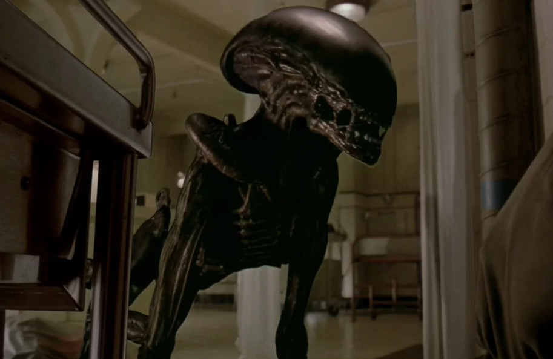

Xenomorph Runner
This Xenomorph is an interesting one to me.
He was introduced in Alien 3 (1992) (Please, don't watch this if you like your time), and he chestbursted from a dog.
The design from the movie was okay at best. Just imagine a skinnier and smaller Xenomorph Drone.

Part of the issue was the fact that the producers made a last minute swap to CGI from practical effects. So, it looked goofy at times.
However, what I did really like and was freaked out was the comic book (same title) rendition of the Runner.

This verison is much better, and more terrifying.
His whole body seems much more lankey and elongated to the point where it is unnerving.
And for whatever reason, his teeth are yellowish which is off-putting with his normal black body.